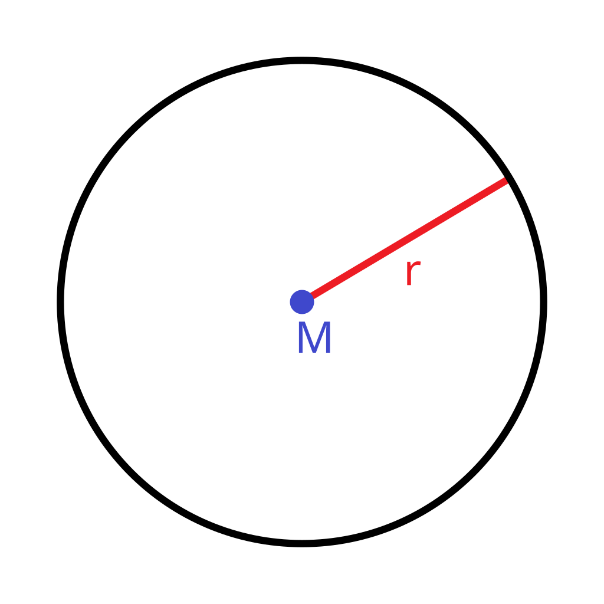

Linea
Una línea es una sucesión continua de puntos que se extiende de manera indefinida en ambas direcciones dentro de un plano, formando una trayectoria recta o curva. Es un concepto fundamental en la geometría que no tiene grosor ni ancho, solo longitud. Las líneas se representan mediante un trazo generalmente fino, y su extensión puede variar, por eso son empleadas para la creación de objetos geométricos más complejos.
Circunferencia
La circunferencia es una curva plana y cerrada tal que todos sus puntos están a igual distancia del centro. Está definida por los infinitos puntos de un plano que distan de un punto fijo (centro) en una magnitud constante denominada radio.
Radio
Un radio es cualquier segmento que une el centro de la circunferencia con un punto cualquiera de la misma.
Diametro
Un diámetro es cualquier segmento que une dos puntos de la circunferencia pasando por su centro. El diámetro también es la longitud del segmento del mismo nombre.
Perimetro
El perímetro es el contorno de la circunferencia y su longitud.
Cuadrante:
Cuarta parte de un círculo o una circunferencia comprendida entre dos radios que forman un ángulo de 90 grados.